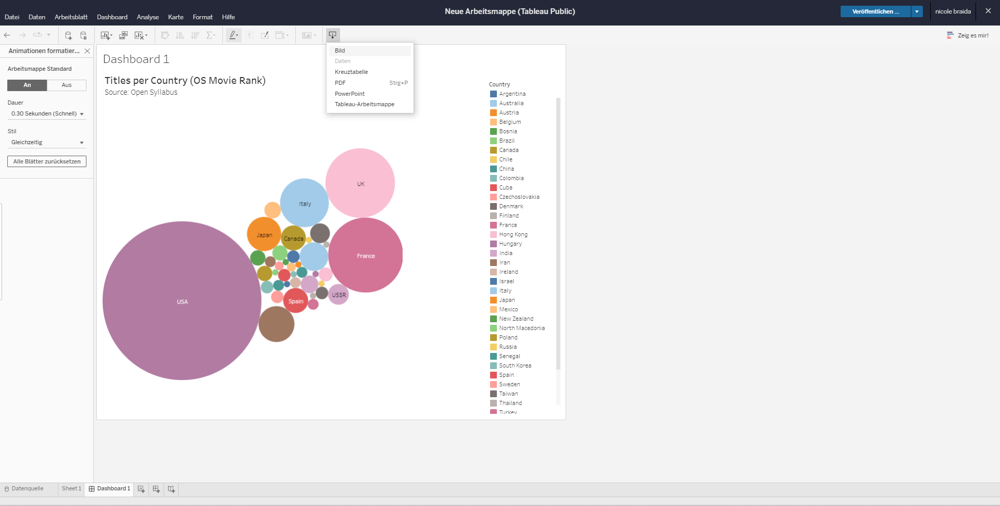

Daten explorieren (und visualisieren) mit Tableau Public
In diesem Tutorial möchten wir das Tool Tableau Public für Datenanalyse und Datenvisualisierung vorstellen. Hierzu geben wir einen kurzen Überblick über die Möglichkeiten dieses Tools und wie es bei der Arbeit mit Daten helfen kann.
Was ist Tableau?
- Funktion: Es handelt sich um die browserbasierte kostenlose Version des BI-Tools Tableau. Diese öffentliche Version ermöglicht, Datensätze hochzuladen, sie zu analysieren, zu visualisieren, Dashboards zu erstellen und sie auf einer persönlichen Seite zu veröffentlichen oder in verschiedenen Formaten herunterzuladen.
- Kostenlose Version, Registrierung erforderlich
- Keine Installation erforderlich, für Studierende und Lehrende kann eine einjährige Pro-Lizenz kostenlos erworben werden
- Kein Programmierwissen erforderlich
- Besonders interessant für die Datenexploration: Im Vergleich zu anderen Visualisierungstools wie RAWGraphs oder DataWrapper ermöglicht das Tool, Datenanalysen direkt durchzuführen, ohne schon im Voraus perfekte Pivot-Tabellen mit den Werten erstellt haben zu müssen.
Wie funktioniert Tableau Public?
Tableau bietet verschiedene Tutorials, abhängig von Kenntnisstand, und bietet auch ein Forum an, in dem man Fragen stellen und überprüfen kann.
Hochladen von Datensätzen
Nachdem wir unser Profil auf Tableau Public erstellt haben, müssen wir auf unser Profil zugreifen und die Kachel “Visualisierung erstellen” wählen, um zur Benutzeroberfläche zu gelangen, die es uns ermöglicht, Daten hochzuladen:
Wir fangen an mit einem einfachen “Drag and drop” des Datensatzes nach dem Herunterladen.
Wir werden mit dem Datensatz Open Syllabus Movie Ranks arbeiten. In Bezug auf diesen Datensatz wurden bereits einige Visualisierungen mit Tableau produziert, wir werden in diesem Tutorial auch versuchen, eine Visualisierung nachzubilden.
Bearbeiten des Datenformats
Tableau zeigt eine Vorschau unseres Datensatzes an, wir möchten möglicherweise den Datentyp jeder Spalte anpassen. Dies ist möglich, indem wir auf die angezeigten Spalten klicken und einen neuen Datentyp auswählen. Normalerweise erkennt Tableau die Datentypen ohne Probleme. Wir fahren dann fort, indem wir auf die untere Leiste auf “Sheet” klicken.
Werte wählen, die analysiert und visualisiert werden sollen
Zunächst möchten wir erkunden, wie viele Filme in unserem Datensatz in einem bestimmten Jahr veröffentlicht wurden. Wir möchten ein Liniendiagramm erstellen. Wir können unsere Werte von der linken Ecke auf die Balken für Zeilen und Spalten unserer Visualisierung ziehen und ablegen. Zuerst wählen wir Jahr und legen es auf Spalten, als nächstes wählen wir Titel für die Zeilenleiste. Weil wir eine bestimmte Menge sehen wollen, klicken wir mit der rechten Maustaste auf Jahr und wählen Kennzahl > Anzahl.

Das Liniendiagramm kann auch gefiltert werden, falls wir nach bestimmten Filmen in unseren Datensätzen suchen möchten, wie z.B. nach dem Herkunftsland. Der Wert wird per “Drag and Drop” direkt auf das Filterfeld gezogen.
Erstellen anderer Diagrammtypen in Sekundenschnelle
Wir möchten unsere Daten möglicherweise auch auf einer Karte anzeigen. Um dies sehr schnell zu tun, haben wir eine Menüleiste auf der rechten Seite, die bereits Vorschläge für andere Diagrammtypen enthält:
Bei Auswahl der Karte gibt uns die Software bereits eine Farbskala für unsere Werte auf einer Weltkarte. Die gleiche Operation können wir wiederholen, indem wir ein Blasendiagramm erstellen, um die verschiedenen Werte für jedes Herkunftsland anzuzeigen:
Wenn wir Werte auf einen der anderen “Marker” (zweite Menüleiste rechts) ziehen und ablegen (wie Farbe, Detail, Größe usw.), können wir die einzelnen Werte mit verschiedenen Codes anzeigen: wenn wir beispielsweise Land auf die Farbmarke ziehen, zeigt unsere Visualisierung ein farbcodiertes Blasendiagramm an.
Verfeinern der Visualisierung und Exportieren der Diagramme oder Dashboards
Jede Visualisierung kann durch Hinzufügen eines Titels und weiterer zusätzlicher Informationen oder durch Hervorheben oder Markieren bestimmter Werte usw. vervollständigt werden. Verschiedene Diagramme können innerhalb eines Dashboards gesammelt werden, indem neue Blätter auf der unteren Leiste erstellt werden und die Visualisierung unserem Dashboard hinzugefügt wird. Jede Visualisierung oder jedes Dashboard kann später als PNG oder PowerPoint heruntergeladen werden. Wir können es auch auf unserem Tableau Public-Profil veröffentlichen, um später darauf zuzugreifen und daran zu arbeiten.

Erstellen des Balkendiagramms aus Open Syllabus Movie Rank
Um die Balkendiagrammvisualisierung des Open Syllabus Movie Rank neu zu erstellen, können wir die Werte “Rang” und “Regisseur” verwenden. Für jeden Regisseur möchten wir die Anzahl der Titel zusammenzählen. Nachdem wir den Wert gezogen und abgelegt haben, klicken wir auf den Regisseur und wählen Summe. Anschließend, um auf dem Balkendiagramm jedes Regisseurs Filme mit einer anderen Farbe anzuzeigen, ziehen wir den Titel per “Drag and Drop” auf die Farbmarke.
Um die Größe des Diagramms anzupassen, können wir die Visualisierung in ein Dashboard importieren, indem wir den Cursor an den Rand des Diagramms bewegen und es in die Richtung bewegen, in die wir es vergrößern oder enger machen möchten.
Was ist allgemein bei der Benutzung von Tableau Public zu beachten?
- Die Daten sollten im CSV- oder Excel-Format vorliegen, damit die Software sie lesen kann. Wir müssen nicht alle Werte im Voraus erstellen, sondern können unsere Analyse direkt im Tool durchführen.
- Leere Werte werden als Nullwerte erkannt, man kann sie während der Analyse direkt filtern.
- Mehr als ein Wert in einer Zelle kann nicht gezählt werden.
- Es ist nicht immer klar, wie vorzugehen ist, um dem Diagramm mehr als einen Wert hinzuzufügen, aber normalerweise hilft es, zusätzliche Werte auf die Balken zu ziehen und abzulegen oder direkt auf das Diagramm zu ziehen und abzulegen. Ein Plus ist, dass man mehrere Werte gleichzeitig darstellen kann.
- Auf der linken Seite gibt es zusätzliche statistische Methoden im Analysemenü. Es ist beispielsweise möglich, eine Linie hinzuzufügen, die den Durchschnittswert zählt.
Wir empfehlen diese zusätzlichen Tutorials anzusehen, um mehr über die Möglichkeiten der Arbeit mit Tableau Public zu erfahren und einen Überblick über bewährte Verfahren zu erhalten:
Die Screenshots wurden von Nicole Braida erstellt. Zuletzt bearbeitet am 09.02.2024